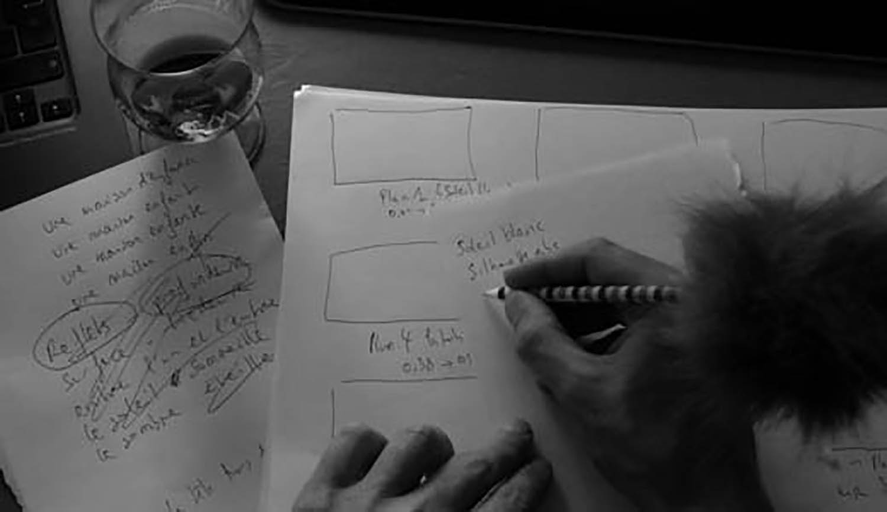

février - juin 2020, Trait d'Union
Ecriture, poésie, théâtre et image à l’Hectolitre
Animé par Claire Ducène & François Kayser

Pour tous les goûts et de toutes les formes ! Les Ateliers de la Mémoire organisent à l’Hectolitre, de février à juin 2020, des cycles variés et complémentaires. Tous les cycles peuvent être suivis individuellement ou bien de manière complémentaire. Des projets qui se rejoignent autour du texte, de l’image, de la structure poétique, des techniques scéniques… Vous pouvez donc suivre un ou plusieurs ateliers et un atelier finale permettra de rejoindre l’ensemble des participants vers un projet d’exposition commun !
Les ateliers seront dirigés par Claire Ducène (plasticienne) et François Kayser (comédien et poète)